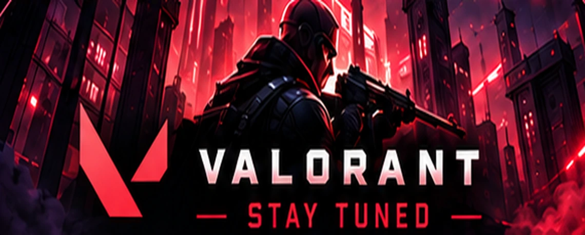
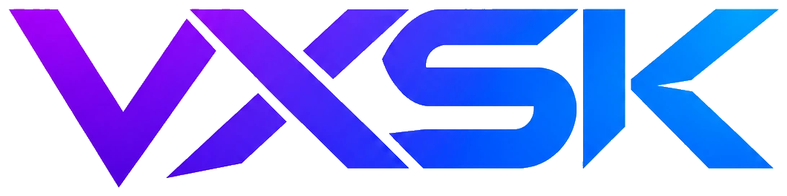
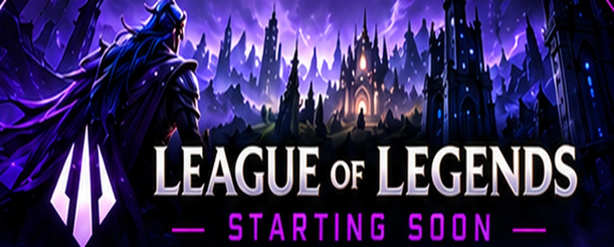
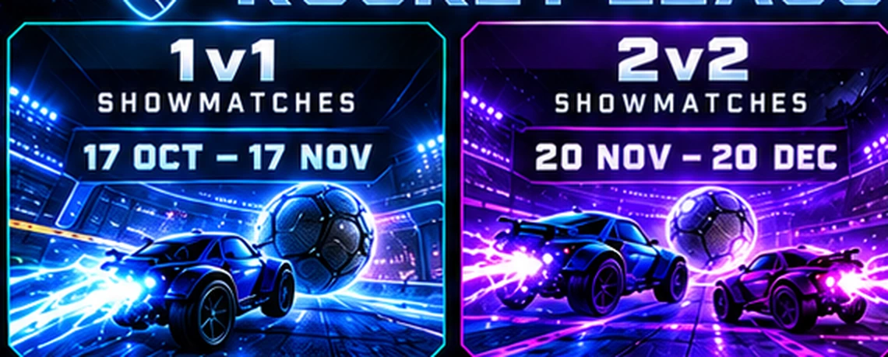

RIOT GAMES · 05 NOV 2026
Protecting Competitive Integrity in VCT 2027
Official VALORANT update covering anti-cheat and player verification for next season.
READ OFFICIAL SOURCE ↗
VXSK / FROM VERIFIED PUBLISHERS
Gaming news and competitive updates from the official developers of the three VXSK games. These are curated source links, not unverified rumors or automatically refreshed headlines.
CURATED: 6 NOVEMBER 2026 · OPEN SOURCE FOR NEWER NEWS

Official VALORANT update covering anti-cheat and player verification for next season.
READ OFFICIAL SOURCE ↗
Official patch notes from Riot Games with changes across the League experience.
READ LATEST PATCH NOTES ↗
Official Rocket League news and events from Epic and Psyonix.
READ OFFICIAL NEWS ↗